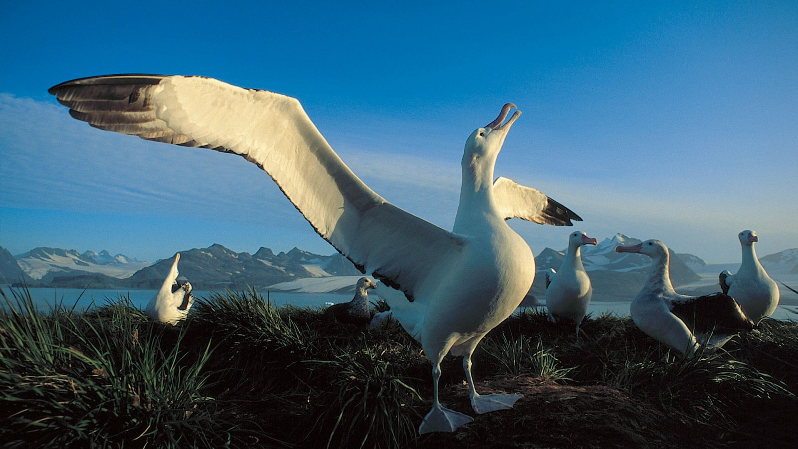

The Wandering Albatross is the largest flying bird on Earth, with the largest wingspan of any living bird species. Master of dynamic soaring, capable of flying thousands of miles without flapping.
Southern Ocean waters, ranging from Antarctica to subtropical seas. Returns to land only for breeding on remote islands.
One of the longest-lived birds, with recorded lifespans exceeding 60 years. Mates for life and raises one chick every two years.
| Parameter | Value | Notes |
|---|---|---|
| Wingspan | 3.1 - 3.7 meters | Largest of any living bird |
| Body Length | 107 - 135 cm | Beak to tail |
| Weight | 6 - 12 kg | Varies by sex and season |
| Wing Area | 0.59 m² | Maximum lift generation |
| Wing Loading | 14.5 N/m² | Extremely low for gliding |
| Glide Ratio | 22:1 to 35:1 | 22-35m forward per 1m descent |
| Flight Speed | 40 - 127 km/h | Cruising to maximum |
| Flap Frequency | 0 - 1 Hz | Rarely flaps in flight |
| Dive Depth | 5 - 10 meters | Surface feeding only |
| Beak Length | 17 - 21 cm | Hooked tip for gripping |

Wandering Albatross (Diomedea exulans) in natural habitat
Hollow bones for weight reduction. Fused clavicle (furcula) acts as spring during flight.
70,000+ feathers. Interlocking barbules create waterproof, airtight wing surface.
Reduced flight muscles (25% body weight) - optimized for gliding, not flapping.
Large, efficient heart with high blood pressure for high-altitude flight.
Unidirectional airflow with air sacs. Extracts 90% oxygen from air.
Exceptional eyesight for spotting prey from altitude. UV vision for ocean reading.
Nasal tubes for olfaction and salt excretion. Unique to tubenose seabirds.
Tendon locking mechanism holds wings extended without muscular effort.
Exploits wind speed gradient over ocean waves. Climbs into wind, turns, descends with wind. Extracts energy from wind shear.
Rides updrafts along wave faces and cliff edges. Uses rising air columns to gain altitude without flapping.
Occasionally uses thermal columns over warm water. Spiral climb technique similar to hawks.
Can travel 10,000 km using less energy than sleeping. Metabolic rate in flight equals resting rate.
Squid, fish, krill, and carrion. Scavenges behind fishing vessels. Can smell food from 20km away.
Sleeps on water surface. Can sleep while drifting. Monocular sleep - one eye open at a time.
Mates for life. Courtship involves elaborate dances. One egg per breeding season, 11-month incubation.
Circumnavigates Southern Ocean. Non-stop flights of 10,000+ km. Returns to same nest site annually.
| Threat | Impact Level | Details |
|---|---|---|
| Plastic Pollution | CRITICAL | 40% of chicks die from plastic ingestion |
| Longline Fishing | CRITICAL | 100,000+ albatross killed annually |
| Invasive Predators | HIGH | Rats, cats on breeding islands |
| Climate Change | HIGH | Shifting prey distributions |
| Oil Spills | MODERATE | Feather waterproofing compromised |